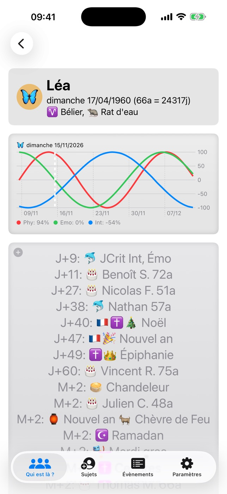
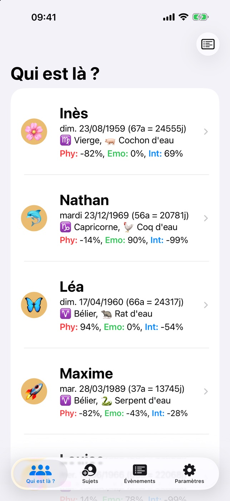
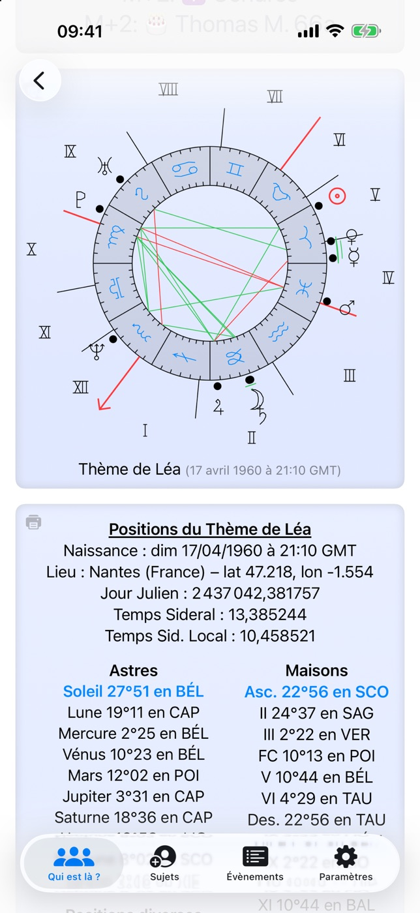
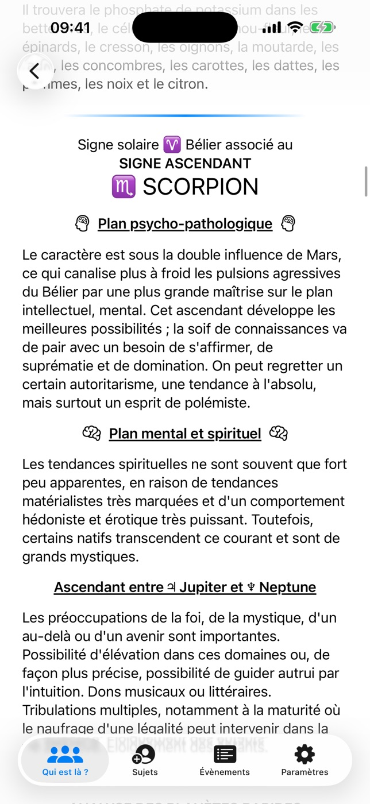
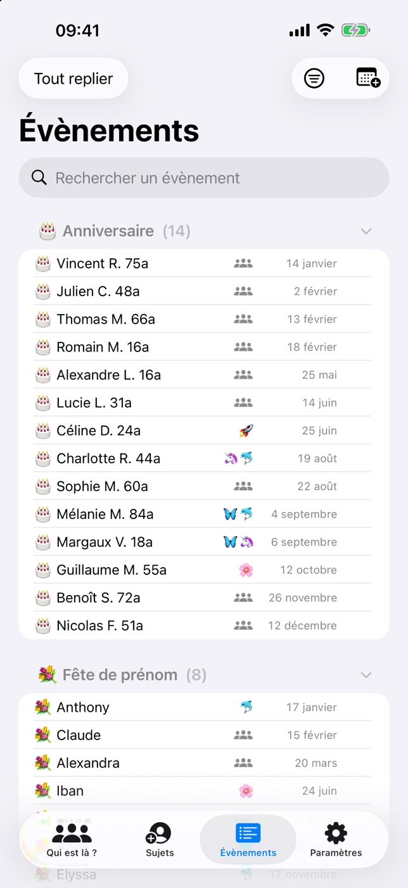
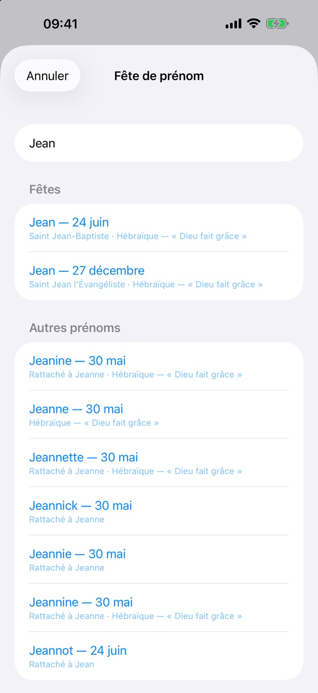
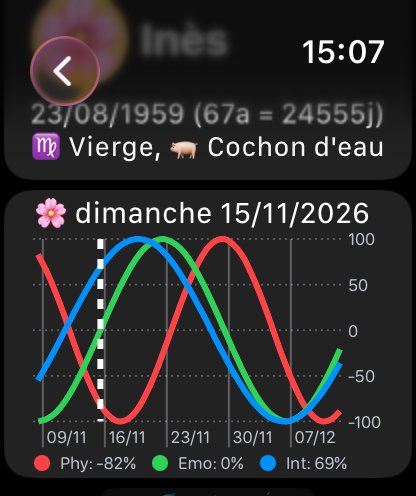

Thème astral et biorythmes
Votre thème astral complet, vos biorythmes du jour et un agenda des anniversaires, fêtes et jours fériés, sur iPhone, Apple Watch et en widget.
Télécharger dans l'App Store
Pour chaque personne qui vous est chère : ses biorythmes du jour, son agenda, son thème astral et son interprétation.





Une application complète, hors ligne, sans compte et sans publicité.
Roue zodiacale, positions des planètes et des maisons, aspects, ascendant, nœuds lunaires et Lune Noire.
Une lecture détaillée du thème, signe par signe et maison par maison, imprimable en PDF.
Courbes physique, émotionnelle et intellectuelle, avec les jours critiques signalés.
Un animal totem choisi d'après votre thème, avec son explication.
Anniversaires avec l'âge, fêtes de plus de 3 000 prénoms, jours fériés, fêtes chrétiennes, juives, musulmanes et chinoises calculées chaque année.
Exportez et importez vos personnes et vos évènements, par AirDrop, Mail ou Fichiers.
Les biorythmes et l'agenda du jour au poignet, synchronisés avec votre iPhone, et un widget pour l'écran d'accueil.

AGX ne collecte aucune donnée.
Une question, une suggestion, un problème ? Écrivez-moi :
Fêtes des prénoms : sources INSEE, datesdesfetes.com, Super Prénom (superprenom.fr).